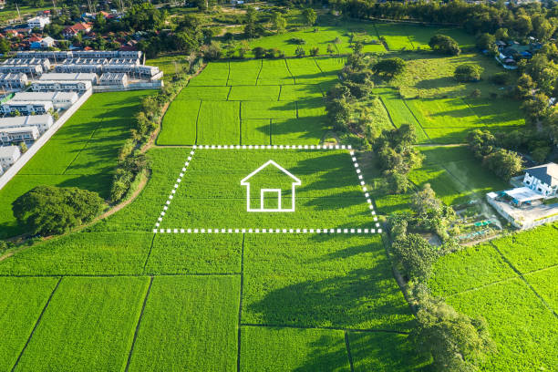

INVIERTE EN TU FUTURO
Terreno en venta en la mejor zona en crecimiento
¿Porque debes comprar un terreno?
Invertir en un terreno es una de las decisiones financieras más inteligentes que puedes tomar, porque representa un bien tangible, seguro y duradero que no se devalúa con el tiempo. A diferencia de otros activos, la tierra mantiene e incluso incrementa su valor gracias al desarrollo urbano, la llegada de servicios básicos y la mejora de las vías de acceso. Además, requiere una inversión inicial menor que la compra de una vivienda y no genera altos costos de mantenimiento, lo que la convierte en una opción accesible y rentable. Un terreno ofrece flexibilidad total: puedes construir tu casa, iniciar un negocio o simplemente esperar a que su valor aumente para venderlo con ganancias. También brinda seguridad y estabilidad patrimonial, pues es un bien que puedes heredar o utilizar como respaldo financiero. En zonas de crecimiento como Cota Cota o Achumani, donde la expansión urbana es constante, adquirir un terreno hoy significa asegurar un patrimonio que se valorizará con el tiempo y que te permitirá construir el futuro que deseas para ti y tu familia